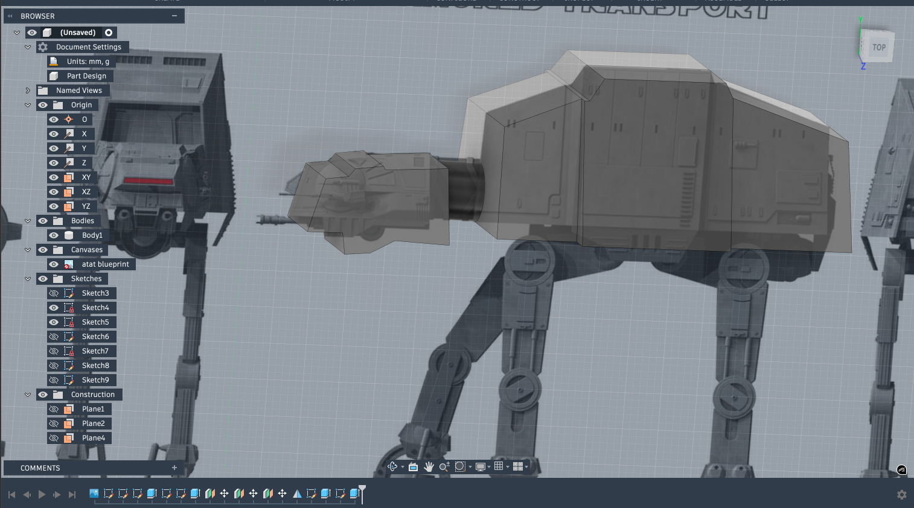
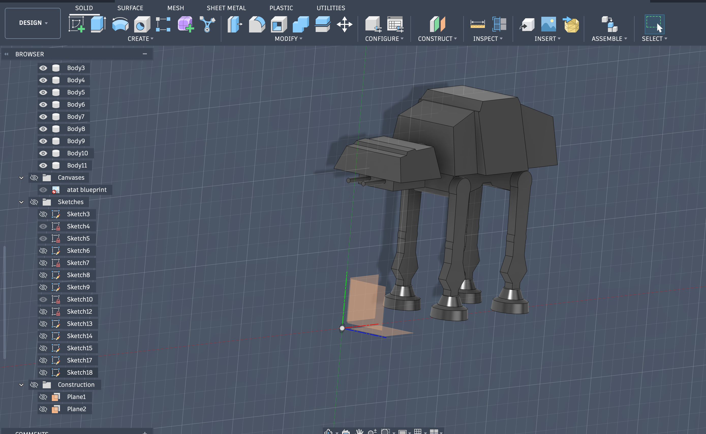
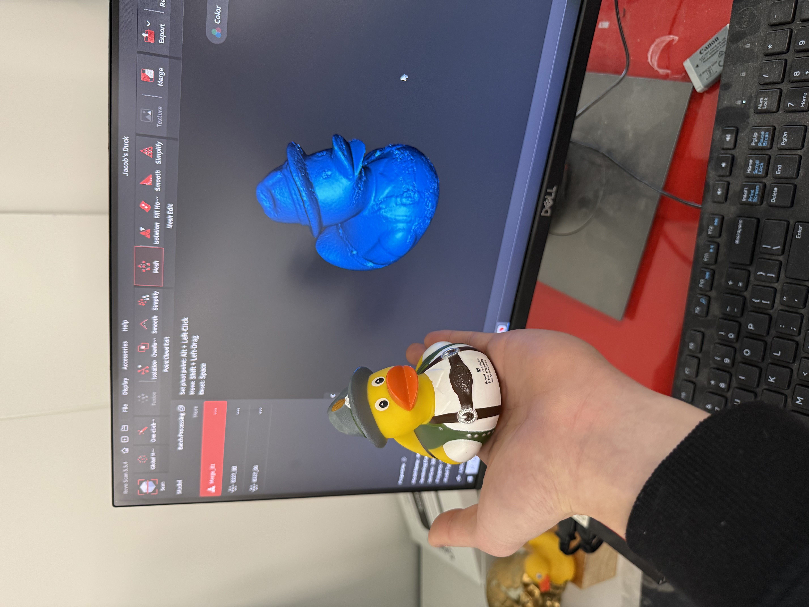

<div class="textcontainer">
<p class="margin"> </p>
<h3>Week 5: 3D Design & Printing</h3>
<h4>Assignment: Model and 3D print something</h4>
<p>
I wanted to try model a miniature AT-AT walker so that I would have more time to visualize how I might make the final project.
I started by inserting a canvas of an AT-AT schematic as a background in fusion then modeling around it to get similar dimensions.
The most difficult part was creating the angled body as well as mirroring the legs and feet. I was having difficulty putting all the
components into one body so that I could 3D print it as a single piece.
</p>
<hr>
<div style="display:flex; justify-content:center; gap:20px; flex-wrap:wrap; margin-top:30px; margin-bottom:40px;">
<img class="tv-frame" src="CAD Process.png" alt="Design process 1" style="width:350px; height:350px;">
<p></p>
<p></p>
</div>
<p>
Here's the 3D model of my AT-AT walker.
</p>
<div class="iframe-container">
<iframe src="https://college959.autodesk360.com/shares/public/SH90d2dQT28d5b602811cd90cdf2badeaaca?mode=embed" allowfullscreen="true" webkitallowfullscreen="true" mozallowfullscreen="true" frameborder="0"></iframe>
</div>
<div style="display:flex; justify-content:center; margin-bottom:40px; gap:20px;">
<a href="./ATAT Week 5 CAD.stl" download style="background-color: #333; color: #f3f3f3; padding: 12px 24px; border-radius: 6px; text-decoration: none; font-weight: bold; border: 2px solid #555; transition: 0.3s;">
⬇️ Download AT-AT STL
</a>
</div>
<a download href='./ATAT Week 5 CAD.stl'>Download my STL file</a>
<h2>DUCK SCAN</h2>
<div class="iframe-container">
<iframe src="https://college959.autodesk360.com/shares/public/SH90d2dQT28d5b602811218fdd5bf2b25bf8?mode=embed" allowfullscreen="true" webkitallowfullscreen="true" mozallowfullscreen="true" frameborder="0"></iframe>
</div>
<div style="display:flex; justify-content:center; margin-top:30px; margin-bottom:40px;">
<p></p>
</div>
<div style="display:flex; justify-content:center; margin-bottom:40px; gap:20px;">
<a href="./Jacob Duck.stl" download style="background-color: #333; color: #f3f3f3; padding: 12px 24px; border-radius: 6px; text-decoration: none; font-weight: bold; border: 2px solid #555; transition: 0.3s;">
⬇️ Download Duck STL
</a>
</div>
<h2>Final Project Planning</h2>
<h4>Project Overview</h4>
<p>
I found some online guides for how to build the linkages to get the ATAT walking. But the guide I found doesn't incorporate any remote control or head movement.
It can also only walk forwards. I'd like to try to make it such that it can turn a little or at least have the head move (and beam a laser), but another degree of freedom will be difficult to incorporate.
</p>
<h4>Inspiration & References</h4>
<ul>
<li><a href="https://www.thingiverse.com/thing:4651937" target="_blank" style="color: #569cd6;">AT-AT Walker 3D Model (Thingiverse)</a> - walking mechanism reference</li>
<li><a href="https://hackaday.io/project/175888/gallery#a50200c3a0b07b466fe4bbccd4a2c8ef" target="_blank" style="color: #569cd6;"> Assembly reference</a> - Leg motion inspiration</li>
<li><a href="https://www.youtube.com/watch?v=CrexH-owqnk" target="_blank" style="color: #569cd6;"> Mechanical Movement Inspo</a></li>
<li><a href="https://www.youtube.com/watch?v=O7BrA6mvvPk" target="_blank" style="color: #569cd6;"> More movement inspo if plan fails</a></li>
</ul>
<h4>Bill of Materials</h4>
| Component | Quantity | Notes |
|-----------|----------|-------|
| ESP32 Microcontroller | 1 | Main controller |
| Servo Motors | 5 | Leg actuation + Head movement |
| Battery | 2? | Power supply |
| Laser pointer | 1 | laser |
| 3D Printed Parts | - | | Structural components |
| Fasteners & Wiring | - | Assembly |
|
<h4>Timeline</h4>
- **Week 6**: Discuss with TAs & Nathan about best way to tackle goals. Finish rough 3D models of parts for assembly.
- **Week 7**: Finish 3D printing all structural parts
- **Week 8**: Assemble legs and test walking mechanism
- **Week 9**: Integrate directional control & laser
- **Week 10**: FIX ANYTHING THAT WENT WRONG
- **Week 11**: Fine-tuning and documentation
- **Week 12**: Final presentation
</div>